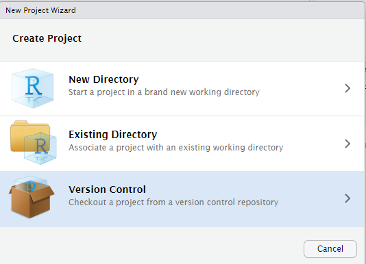

4 GitHub Guide for Students in Stat 220
4.1 Overview
If you are using the maize RStudio server, then you can connect to GitHub without any extra software downloads. If you are using RStudio on your computer, then you will need to download Git software (as directed in Software in Stat 220) to use GitHub connected projects. You will use GitHub to submit homework and collaborate on projects.
4.2 Getting setup with Git and GitHub
If you are not working on the maize RStudio server, then make sure
that you have installed all of the software mentioned in Software in Stat 220. In addition, you should install the usethis and gitcreds R packages.
Everyone needs to connect Git and GitHub by doing the following:
Register for account on GitHub (https://github.com/). I recommend using a username that incorporates your name (e.g., dbastola) and Carleton email address for your Github account.
If you haven’t done so already, accept the invite to the class organization DataScienceSpring23. This organization is where all course homework files and project repositories will live.
-
Setup options in Git by running the following code chunk in your console:
#install.packages("usethis") # uncomment to install usethis::use_git_config(user.name = "Jane Doe", user.email = "jane@example.org")changing the first two arguments to your own name and email (this should be the email associated with your GitHub account).
-
In order to push changes to github (i.e. to track changes and submit homework), you will need to prove that you have permission to change a Github repo. This is done with a personal access token (PAT). Note that you will need to install the packages usethis and gitcreds to do this.
usethis::create_github_token()Call `gitcreds::gitcreds_set()` to register this token in the local Git credential store It is also a great idea to store this token in any password-management software that you use ✓ Opening URL 'https://github.com/settings/tokens/new?scopes=repo,user,gist,workflow&description=R:GITHUB_PAT'“Generate token” and store your tokens somewhere safe in your local computer as you will need this again in the future. You can additionally add PAT to your
.Renvironfile as well. Copy it and paste it into your .Renviron file as system variable GITHUB_PAT usingusethis::edit_r_environ()Add to the file and save. You can also set the PAT token in R using the following.
#install.packages("gitcreds") # uncomment to install gitcreds::gitcreds_set()You can check that you’ve stored a credential with
gitcreds_get():gitcreds::gitcreds_get()
You should get something like this:
```
#> <gitcreds>
#> protocol: https
#> host : github.com
#> username: PersonalAccessToken
#> password: <-- hidden -->
```Treat your PAT token like a password! For details, follow the step in Section 9.1 on this page to do this: https://happygitwithr.com/https-pat.html.
4.3 Individual assignments
If you followed the suggestions in the File organization in RStudio page, then you should already have an assignments folder on your computer or maize account.
Each new assignment/project will be posted as a repository on GitHub and added directly to your account (within the Stat220 organization). This repository will contain assignment details (README, .Rmd).
4.3.1 Creating an individual assignment repo and project
Go to our course GitHub organization page (DataScienceSpring23) and find your homework repo, such as
hw1-username(where your username is attached).Enter the online assignment repository on GitHub. Click the green “Code” button. Most of you should just use the default setting which is to “clone” (copy) using HTTPS. Click the clipboard to the right of the URL to copy the repo location.
-
Now open up RStudio and create a project as follows:
- Click the Project button in the upper right corner of your RStudio window and select New Project….

- Select Version Control and then New Project 
- Paste the link you just copied into the Repository URL box. Leave the Project directory name blank (or keep the auto-filled name). Use the Browse button to find your assignments folder, then click Create Project
- Click the Project button in the upper right corner of your RStudio window and select New Project….

4.3.2 Working on your assignment
An RStudio project should now open, which will allow you to start
working on your homework assignment. You should see the project
assignment name in the top right side of Rstudio. You will probably see
a blank console screen when you open a new project. Look in the
Files tab for your homework .Rmd file. Click on whatever file you
want to edit (probably the .Rmd file) and edit away. Make sure that your
current assignment’s project is the one open and showing in the upper
rightproject name. To open a project, click on the .Rproj file or
use the Open Project… option available in the upper right project
link.
4.3.2.1 Commits
After you make changes to the homework assignment, commit them. What are commits you ask? Commits are essentially taking a snapshot of your projects. Commits save this snapshot to your local version of Git (located on your hard drive or the maize server). For example, if I make changes to a code so that it prints “Hello world”, and then commit them with an informative message, I can look at the history of my commits and view the code that I wrote at that time. If I made some more changes to the function that resulted in an error, I could go back to the commit where the code was originally working. This prevents you from creating several versions of your homework (homework-v1, homework-v2, …) or from trying to remember what your code originally looked like.
You can make commits in the Git tab in RStudio.

Click the Commit button in the Git tab. Check the boxes of the files that you want to commit, enter your commit message (briefly state what changes have been made), then hit Commit. You can read how to do this in RStudio in more detail here: http://r-pkgs.had.co.nz/git.html#git-commit.
Two things about committing.
- You should commit somewhat frequently. At minimum, if you’re doing a homework assignment, you should make a commit each time that you’ve finished a question.
- Leave informative commit messages. “Added stuff” will not help you if you’re looking at your commit history in a year. A message like “Added initial version of hello-world function” will be more useful.
4.3.2.2 Pushing changes to Github
At some point you’ll want to get the updated version of the assignment back onto GitHub, either so that we can help you with your code or so that it can be graded. You will also want to push work frequently when you have a shared GitHub repo for project collaborations (i.e. more than one person is working on a project and code). If you are ready to push, you can again click on the “Up” Push arrow in the Git tab or in the Commit pop-up window or in the Git tab (shown above).
To “turn in” an assignment, all you need to do is push all your relevant files to Github by the deadline.
4.4 Group work
Collaborative Github assignments are pretty similar to individual assignments.
4.4.1 Creating a group/partner assignment repo and project
Go to our course GitHub organization page(DataScienceSpring23) and find the repo for your group, for example if your group name is “team01” the you might find the mp1-team01 repo. Clone this repo to your computer/maize account using the same steps done for an individual assignment (see steps 2-3).
4.4.1.1 Working with collaborative repos
For group homework, I suggest that only the recorder edit the group-homework-x.Rmd file to avoid merge conflicts! Other group members can create a new Markdown doc to run and save commands. Only the recorder needs to push changes (answers) to the Github repo and all others can then pull these changes (i.e. the final answers) after the HW is submitted.
When you are working together on a Github project, you should commit and push your modifications frequently. You will also need to frequently pull updates from Github down to your local version of RStudio. These updates are changes that your teammates have made since your last pull. To pull in changes, click the “Down” Pull arrow in the Git tab (shown above).
If you get an error about conflict after pulling or pushing, don’t freak out! This can happen if you edit a file (usually an .Rmd or .R file) in a location that was also changed by a teammate. When this happens you should attempt to fix the merge conflict. Take a look at this resource site and try to fix the merge conflict in Rstudio.
4.6 Acknowledgements
Most of this content in this guide was taken from https://github.com/jfiksel/github-classroom-for-students, edited for our classroom use by Katie St. Clair.